Der Aufstieg
Die Wege der Erbauer
Sechs geheime Gänge in Seitenansicht in den Wänden: der gefährlichste Weg nach Hause und der reichste.
Die Erbauer benutzten nie die große Treppe: Sie hatten ihren eigenen Weg nach unten, versteckt in den Wänden, und jeden Zentimeter davon mit Fallen gesichert.
Sechs Risse in den Wänden des Tempels, jeder nur durch die Linse zu sehen. Dahinter ändert das Spiel seine Gestalt: ein Fallen-Plattformer in Seitenansicht, Bildschirm für Bildschirm, der durch die Pyramide nach unten zu einer verborgenen Sonnentür führt, die sich zur Schwelle öffnet.
Sie sind der gefährlichste Weg, lebend nach Hause zu gehen, und der reichste. Funde, die du durch einen Weg hinausträgst, sind anderthalbmal so viel wert, und dort liegen Relikte, die es sonst nirgends gibt.
- Ansicht
- Von der Seite, jeweils ein fester Bildschirm
- Leben
- 5 für den Weg; eine Berührung, und du bist Staub
- Werkzeuge
- Stabstoß, Glutladungen, Seile
- Fairness
- K'in warnt einmal pro Falle und zeigt dir, was dich erwischt hat

Wie sie sich spielen
Ein Bildschirm, ein Rätsel
Eine feste Kamera zeigt einen Bildschirm und schneidet zum nächsten, sobald du den Rand überquerst. Jede Falle ist ganz zu sehen, bevor du dich festlegst, also fühlt sich der zweite Versuch klug an, nicht wie Glück.
Lern den Bildschirm, schaff ihn beim nächsten Versuch und heb dir deine Leben für die Bildschirme auf, auf die es ankommt. Gehen sie dir aus, wirft dich der Weg hinaus, und du giltst als tot.

Die Ausrüstung
Fallen bedienen, nicht nur ausweichen
Stabstoß: löst Drähte und Drucksteine aus sicherer Entfernung aus. Glutladungen: sprengen rissige Blöcke, aber geh weg, wenn es zischt. Seile: rollen sich an Bronzeankern ab und führen zu geheimen Simsen.
Der Hauptweg braucht nie ein Seil oder eine Ladung. Sie sind für Schätze da, also sind sie Gier, nie eine Sackgasse.
Sechs Wege
Verborgen hinter den Wänden
| Weg | Riss zu finden in | Bildschirme | Thema |
|---|---|---|---|
| I · Der Weg der Erbauer nach unten | Die Wurzelkeller | 14 | Fallengalerien; die Felsenflucht |
| II · Die ertrunkenen Zisternen | Die Pfeilkolonnade | 12 | Wasser als Zeitgeber; eine Flucht vor der Flut |
| III · Das wandernde Gewölbe | Der verschwindende Pfad | 12 | Wände, die sich zwischen deinen Toden verschieben |
| IV · Der Brennofengang | Der Sonnenbrunnen | 12 | Feuer; die Lavawelle |
| V · Der gläserne Weg | Die Halle der Lügen | 12 | Trugböden; ein Sturz durch drei Bildschirme |
| VI · Die Treppe des Steinmetzen | Das innere Heiligtum | 10 | Der letzte lange Fall |
Weg I
Der Weg der Erbauer nach unten
Vierzehn Bildschirme im Zickzack durch die Wand der Pyramide. An der ersten Wand ein Kratzer in einer Handschrift, die Kaya kennt.

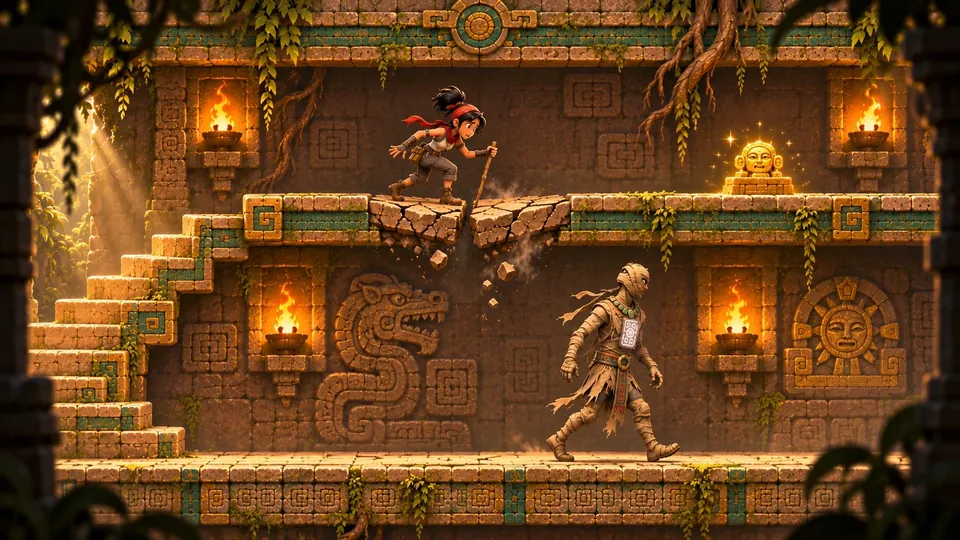

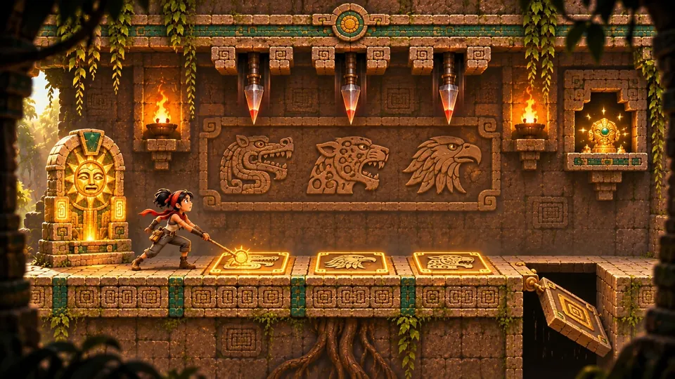

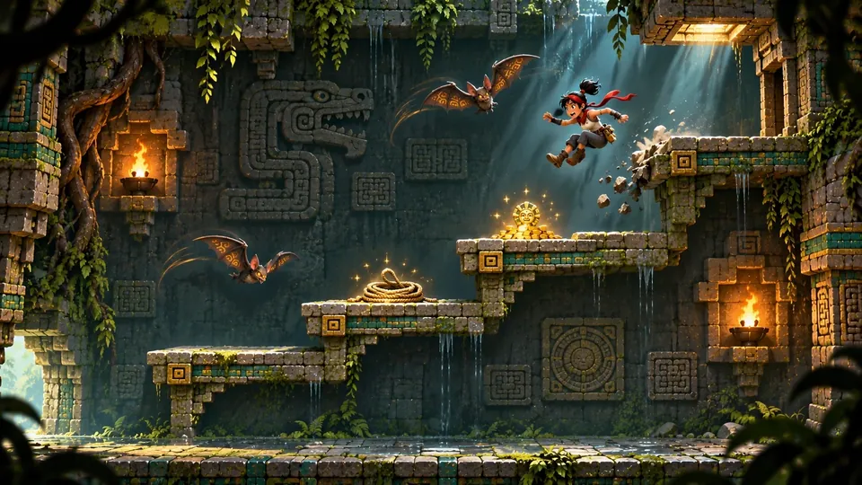

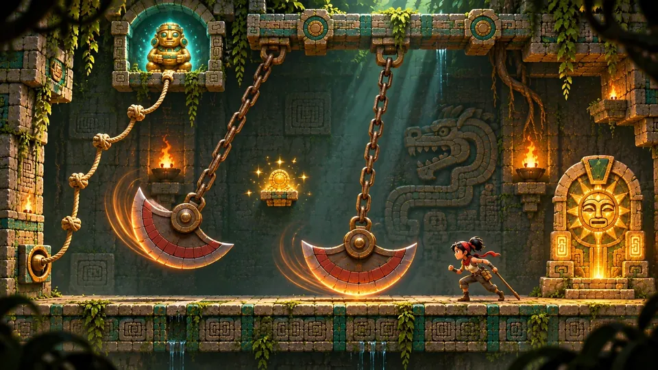

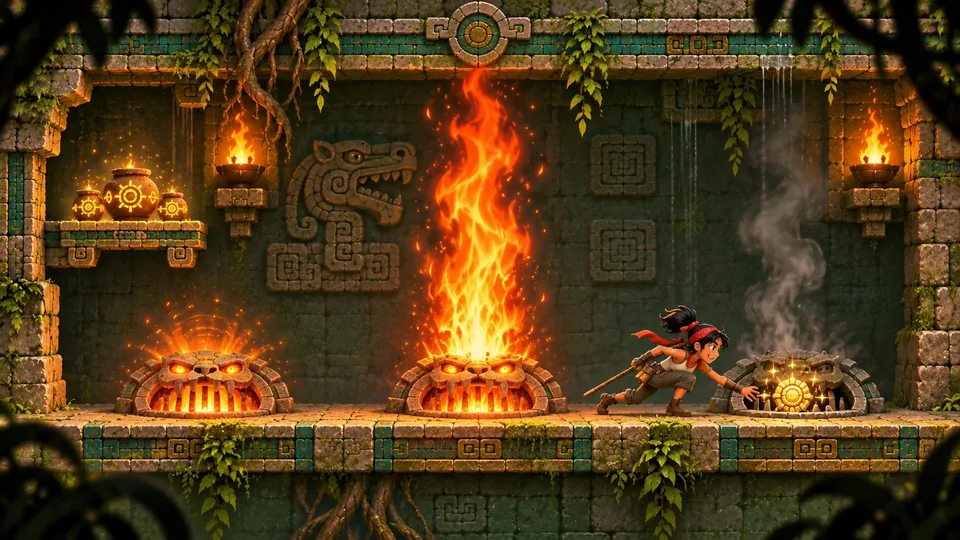

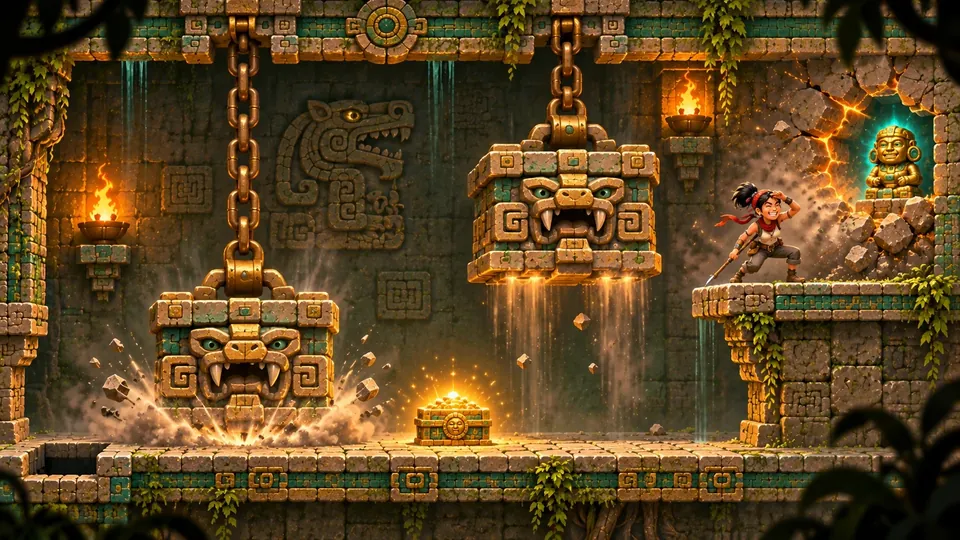

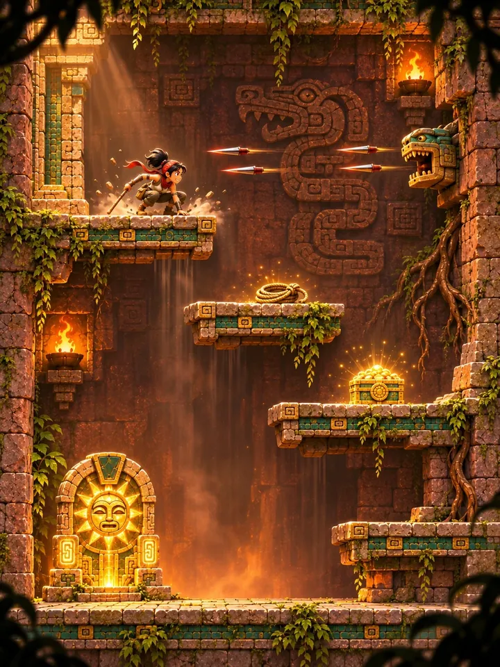

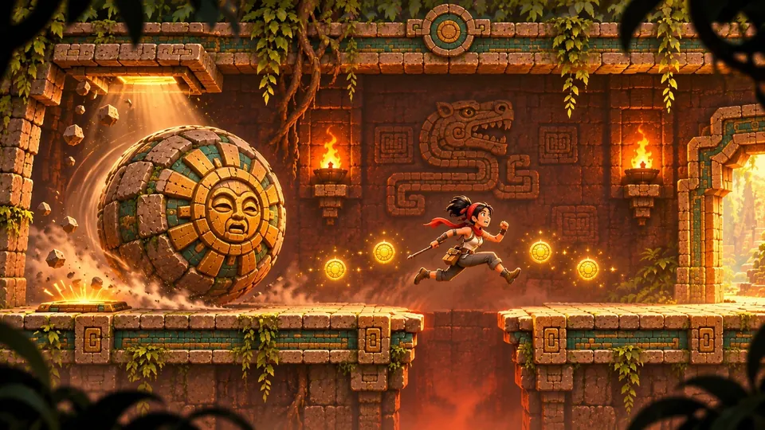

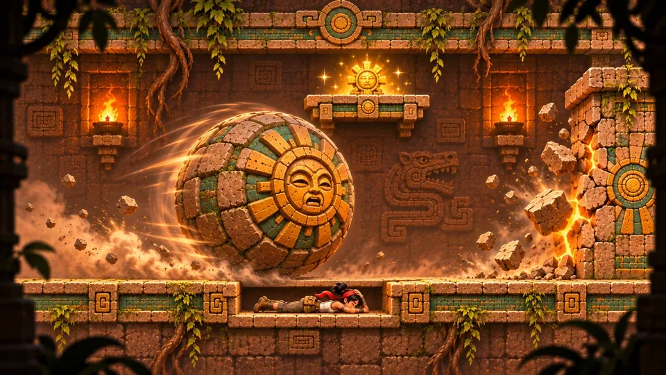

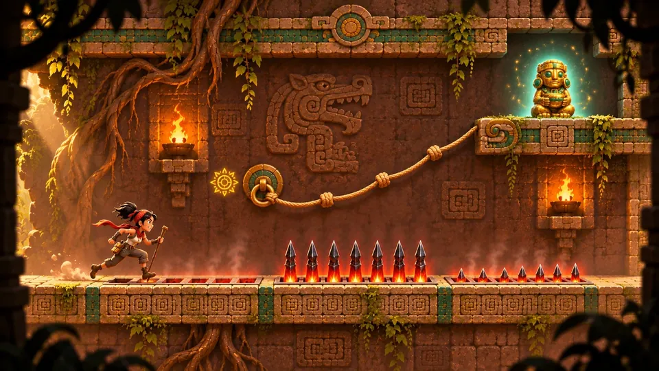

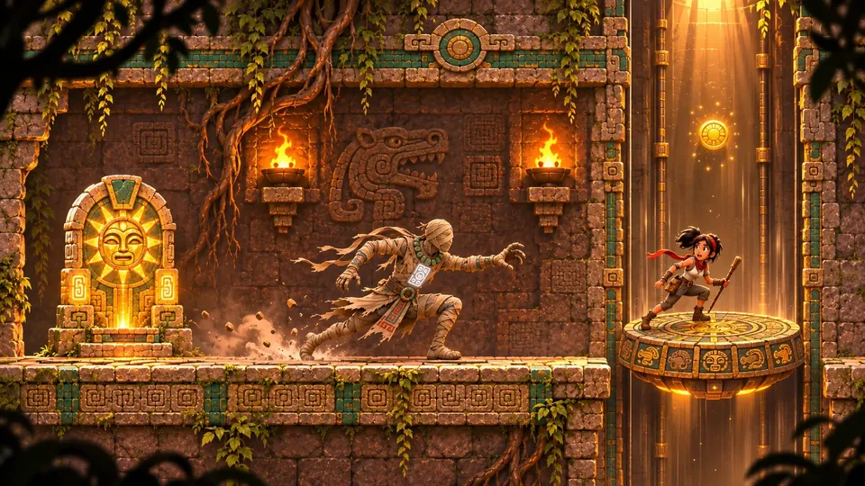

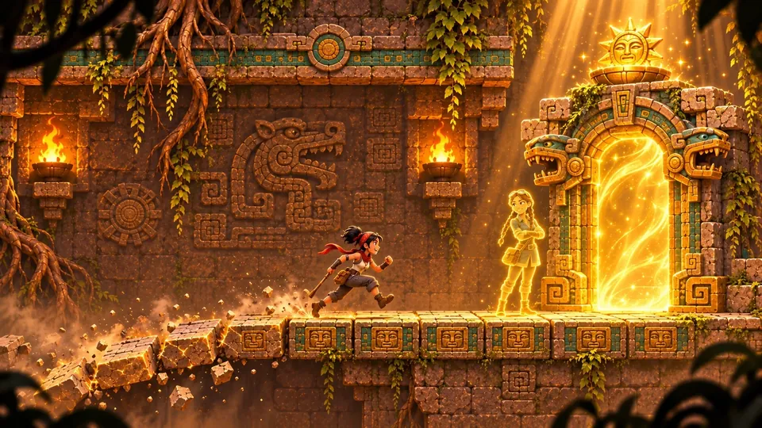
| Bildschirm | Was er lehrt |
|---|---|
| Der Spalt | Laufen, springen und den Stolperdraht anstupsen, bevor der Speer dich findet. |
| Pfeilhalle | Glutladungen, ein rissiger Boden mit Gold darunter und ein Druckstein, den du aus der Ferne anstupst. |
| Wächtergalerie | Ein Erweckter Wächter auf Patrouille und ein bröckelnder Steg über ihm. |
| Der versiegelte Boden | Lies das Wandbild und drück die Platten in seiner Reihenfolge: Schlange, Jaguar, Adler. |
| Fledermausschacht | Über versetzte Simse nach unten, zwischen zwei Höhlenfledermäusen. |
| Pendelhalle | Zwei Klingen, einen halben Schwung versetzt, und ein Seil hinauf zum ersten Großen Idol. |
| Feuerdüsen | Drei Düsen feuern als Welle, lauf direkt hinter ihr her. |
| Stampferkammer | Zwei Stampfer im Fünf-Sekunden-Takt und eine Wand, die sich aufzusprengen lohnt. |
| Der lange Fall | Große Sprünge einen hohen Schacht hinab, mit Pfeilen auf dem zweiten Sims. |
| Felsenflucht I | Eine Platte klickt, ein Felsbrocken fällt. Renn und spring in vollem Lauf über die Grube. |
| Felsenflucht II | Duck dich in die Nische und lass den Felsbrocken die Wand für dich einschlagen. |
| Speergang | Stachelleisten steigen als Welle, ein Seil führt zum dritten Großen Idol. |
| Kalenderaufzug | Ein schnellerer Wächter, dann ein Kalenderstein, der dich hebt. |
| Die Sonnentür | Eine bröckelnde Kette, auf der du nicht stehen bleiben darfst, und jemand, der an der Tür wartet. |